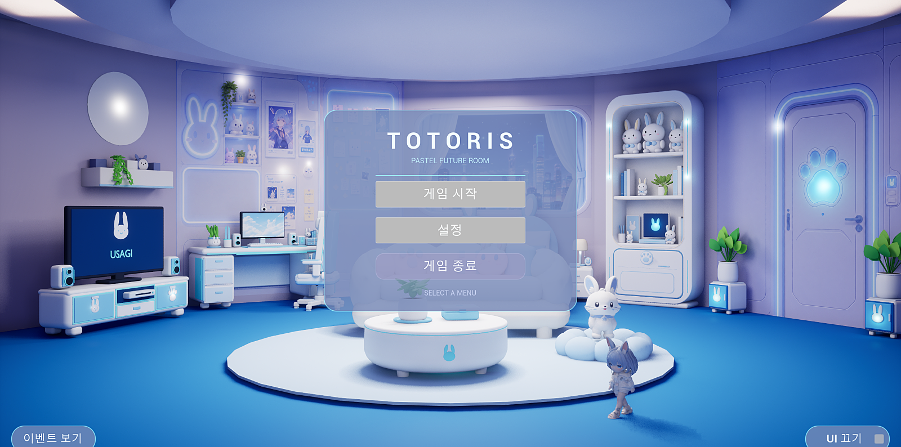
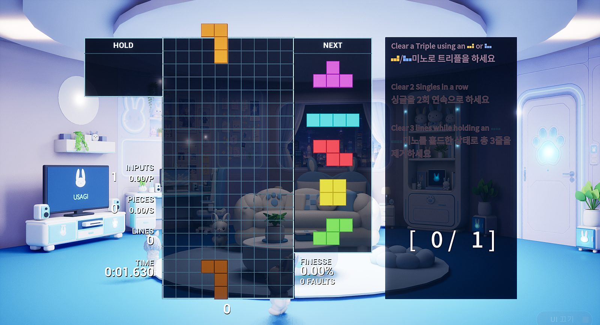
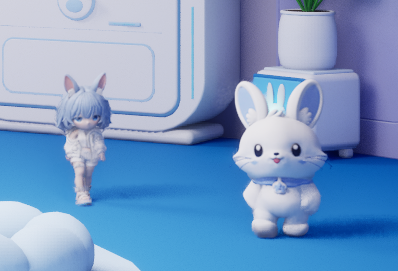

팬게임 상세 문서
토토리스
토토리스(TOTORIS)는 아시토와 팬캐릭터 토토리를 소재로 한 테트리스 방식의 블록 퍼즐 팬게임이다. 아시토의 음성을 활용한 ‘시토모드’, 여러 클래식 모드와 미션, 방송 게임을 소재로 한 특별 연출이 특징이다.
| 게임명 | 토토리스 (TOTORIS) |
|---|---|
| 구분 | 팬게임 |
| 장르 | 퍼즐게임 |
| 실행 환경 | Windows PC |
| 출시일 | 2026.10.28 |
| 최신 버전 | 1.2 |
| 관련 공지 | 네이버 카페 공지 ↗ |
1. 개요
토토리스는 테트리스와 같은 방식의 퍼즐 게임으로, 스트리머 아시토와 팬캐릭터 ‘토토리’를 테마로 한 팬 제작 게임이다.
2. 특징
2.1. 시토모드
설정에서 시토모드를 활성화하면 특정 기술을 성공시켰을 때 아시토의 “쨔잇!”, “얍!” 등 방송에서 익숙한 시그니처 음성을 효과음으로 들을 수 있다. 제공된 1.2 버전 게임 파일에는 스핀 라인 클리어, 쿼드(Quad), 올 클리어(All Clear)에 대응하는 시토모드 전용 효과음이 포함되어 있다.
T-스핀(T-Spin)은 T자형 블록을 회전시켜 끼워 넣는 기술이며, 라인 클리어(Line Clear)는 가로줄을 완성해 지우는 것을 말한다. 쿼드는 한 번에 네 줄을 지우는 기술, 올 클리어는 줄 제거 후 필드에 블록이 하나도 남지 않는 상태를 뜻한다. 단순한 블록 회전이나 모든 종류의 라인 클리어에 같은 음성이 재생되는지는 확인되지 않았다.
2.2. 클래식 모드
일반적인 낙하형 블록 퍼즐 방식의 플레이 외에도 스프린트(Sprint), 블리츠(Blitz), 치즈 레이스(Cheese Race)와 관련된 게임 모드 및 목표 설정이 마련되어 있다. 스프린트는 정해진 줄 수를 빠르게 제거하는 방식이며, 블리츠는 제한 시간을 사용하는 방식이다. 치즈 레이스는 빈칸이 섞인 방해 줄(가비지 라인)을 제거하는 방식의 플레이를 가리킨다.
블록을 잠시 보관하는 홀드(HOLD), 다음 블록 미리보기 넥스트(NEXT), 180도 회전 등의 조작도 지원한다.
2.3. 미션과 챌린지
정해진 플레이 조건을 달성하는 미션 시스템이 구현되어 있다. 인게임 화면에서는 특정 블록으로 트리플(Triple, 한 번에 세 줄 제거)을 달성하거나, 싱글(Single, 한 번에 한 줄 제거)을 두 번 연속 성공시키거나, 홀드를 사용한 상태에서 조건을 만족시키는 등의 과제를 확인할 수 있다. 미션 목록에는 A~F 단계의 선택 항목과 S 챌린지 관련 기능이 존재한다.
플레이 중에는 제거한 줄 수, 블록 배치 속도(PPS), 조작 효율을 나타내는 피네스(Finesse), 실수 횟수(Faults) 등 여러 기록이 표시되어 결과를 살펴볼 수 있다.
2.4. 특별 이벤트와 이스터 에그
테트리스 플레이 외에도 스트리머 아시토의 방송에서 다뤘던 게임을 떠올리게 하는 특별 연출이 담겨 있다. 게임 파일에는 마인크래프트, 작혼, 산나비, 쓰르라미 울 적에, Journey, REANIMAL, 스마일모 등과 관련된 이벤트·소리·이미지 리소스가 포함되어 있다. 특정 미션의 진행 또는 완료와 연계된 연출 처리 기능 및 이벤트를 확인하는 갤러리 기능도 마련되어 있다.
2.5. 조작 및 편의 설정
키 배치를 직접 변경할 수 있으며, 블록이 자동으로 수평 이동하기 시작하는 지연 시간 (DAS), 반복 이동 간격(ARR), 소프트 드롭 속도(SDF) 등 테트리스 계열 게임의 조작감과 관련된 설정을 지원한다. 음량, 창 모드, 시토모드 활성화 여부 등도 설정할 수 있다.
2.6. 테마와 연출
게임 배경은 스트리머 아시토의 방송 배경과 비슷한 방이다. 인게임에는 SD스타일의 3D 아시토 캐릭터와 토토리가 돌아다닌다. 일반적인 퍼즐 게임의 플레이 필드와 별개로 캐릭터 및 공간 연출을 감상할 수 있는 것이 특징이다.
3. 출시 및 업데이트 기록
3.1. 출시
토토리스의 는 2026년 10월 28일 최초 공개했으며 이전 버전별 변경 내역은 네이버 카페 관련 공지에서 확인이 가능하다.
4. 인게임 사진


